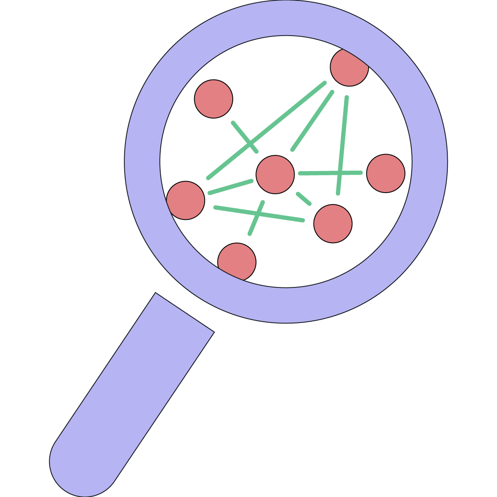

<div class="projects">
    <section class="project">
        <h1>Current Projects</h1>
        {% for project in site.data.projects %}
            {% if project.status == "current" %}
            <div class="project-item">
                <h2>{{ project.title }}</h2>
                <p>{{ project.abstract }}</p>
                <div><i class="fa-solid fa-money-check"></i> {{ project.funding }}</div>
            </div>
            {% endif %}
        {% endfor %}
    </section>
</div>

<div class="container">
{% for project in site.data.projects %}
{% if project.status == "current" %}
    <div class="project-item">
    <div class="row">
        <div class="col-4 project-logo">
            
        </div>
        <div class="col-8 project-description">
            <h2>{{ project.title }}</h2>
            <p>{{ project.abstract }}</p>
        </div>
    </div>
    </div>
{% endif %}
{% endfor %}
